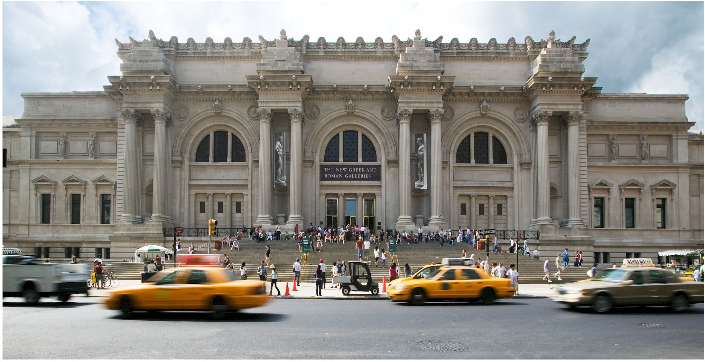

Metropolitan

Hours
Sunday–Thursday: 10 am–5:30 pm Friday and Saturday: 10 am–9 pm
Exhibitions
Woman Artist in Revolutionary France Through May 15
Nasreen Mohamedi Through June 5
Unfinished: Thoughts Left Visible Through September 4
The world in play: Luxury Cards,1430-1540 Sol LeWitt:Wall Drwaing #370
and more Exhibitions
The Met vs. Moma
The Met is making big moves into 20th-century art, propelled by Leonard Lauder’s recent $1 billion gift of 81 Cubist masterpieces—though MoMA’s president emerita, Agnes Gund, tells Colacello: “I think it’s great that Leonard’s collection is going to the Met, not that we wouldn’t have wanted it at the Modern.” Colacello also details the massive expansions both museums are planning, which for MoMA includes a highly controversial Diller Scofidio + Renfro design that proposed opening the entire first floor free of charge, including the garden.
MoMA director Glenn Lowry responds to criticisms of the plan, telling Colacello, “We heard a lot of feedback at the time we announced the potential opening of the garden to the public, from people who were genuinely concerned that that would alter its unique quality,” he said.
“So we’re thinking it through.” But Ronald Lauder, MoMA’s influential honorary chairman (and Leonard’s brother), gives Colacello a more absolute answer: “The garden should not be open to the public.
The board feels that way.” For his part, Lowry’s rival, Met director Thomas Campbell, tells Colacello of the Met’s planned expansion, for which no architect or budget has been announced, “It’s going to be the most high-profile cultural building project in New York in the next 10 years.”
Why New York's Metropolitan museum is leader of the free world of art
The Metropolitan accepts no limits: art here does not stop in 1900, or in 2013, but feels like a living process.
Yet unlike museums of modern art this rich palace of wonders does not pretend art began in 1900, either: Jasper Johns, it grandly assumes, belongs in the same building as El Greco.
Museums are models of the mind. How a museum shapes its collection exerts a subtle and profound influence on how a culture sees art.
American ways of seeing art are generally free of the dull ideological battles between "conservatives" and "modernists" that still paralyse so much discussion of art in Britain.
Is that down to the copiousness of the Met? More likely it reflects America's inherent comfort with modernity.
Direction:
MoMA director Glenn Lowry responds to criticisms of the plan, telling Colacello, “We heard a lot of feedback at the time we announced the potential opening of the garden to the public, from people who were genuinely concerned that that would alter its unique quality,” he said.
“So we’re thinking it through.” But Ronald Lauder, MoMA’s influential honorary chairman (and Leonard’s brother), gives Colacello a more absolute answer: “The garden should not be open to the public.
The board feels that way.” For his part, Lowry’s rival, Met director Thomas Campbell, tells Colacello of the Met’s planned expansion, for which no architect or budget has been announced, “It’s going to be the most high-profile cultural building project in New York in the next 10 years.”
Yet unlike museums of modern art this rich palace of wonders does not pretend art began in 1900, either: Jasper Johns, it grandly assumes, belongs in the same building as El Greco.
Museums are models of the mind. How a museum shapes its collection exerts a subtle and profound influence on how a culture sees art.
American ways of seeing art are generally free of the dull ideological battles between "conservatives" and "modernists" that still paralyse so much discussion of art in Britain.
Is that down to the copiousness of the Met? More likely it reflects America's inherent comfort with modernity.